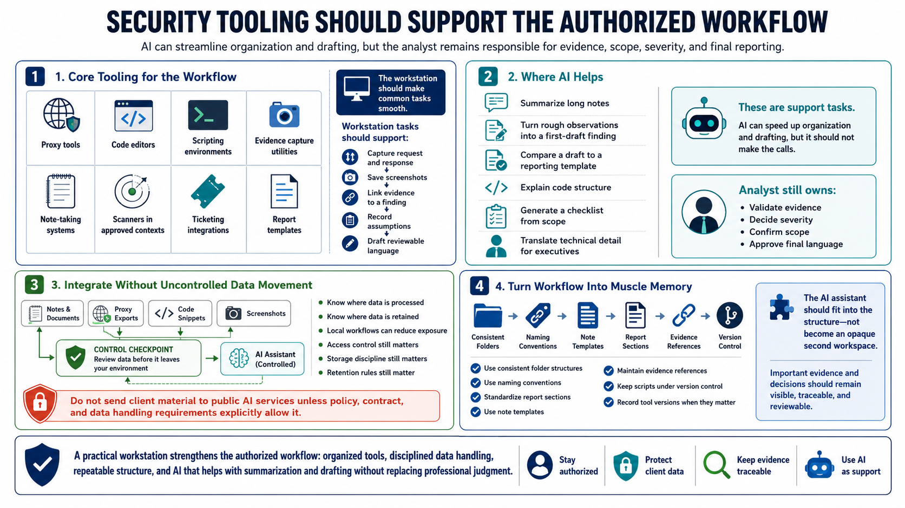

Security Tooling and Workflow Integration
Connecting to LMS... Progress: in progress

Narration
Security tooling should support the authorized workflow. Proxy tools, code editors, scripting environments, evidence capture utilities, note-taking systems, scanners in approved contexts, ticketing integrations, and report templates all have a place. The workstation should make common tasks smooth: capturing a request and response, saving a screenshot, linking evidence to a finding, recording assumptions, and drafting language that can be reviewed.
AI can help organize and explain assessment material. It can summarize a long set of notes, turn rough observations into a first-draft finding, compare a draft against a reporting template, explain code structure, generate a checklist from scope, or help translate technical detail for an executive audience. These are support tasks. The analyst still validates evidence, decides severity, confirms scope, and approves final language.
Integration should avoid uncontrolled data movement. If notes, proxy exports, code snippets, and screenshots are fed into an assistant, the team must know where that data is processed and retained. Local workflows can reduce exposure, but they do not remove the need for access control, storage discipline, and retention rules. Public AI services should not receive client material unless policy, contract, and data handling requirements explicitly allow it.
A practical workstation turns workflow into muscle memory. Use consistent folder structures, naming conventions, report sections, note templates, and evidence references. Keep scripts under version control. Record tool versions where they matter. The AI assistant should fit into that structure by helping with summarization and drafting, not by becoming an opaque second workspace where important evidence and decisions disappear.